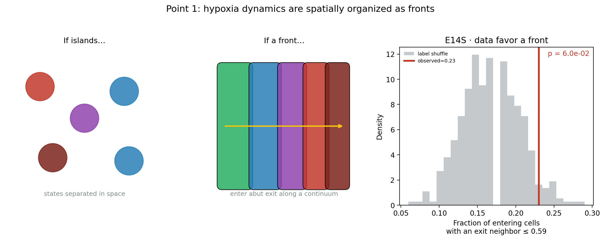
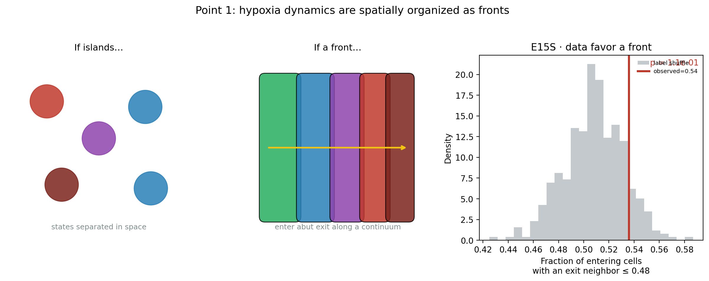
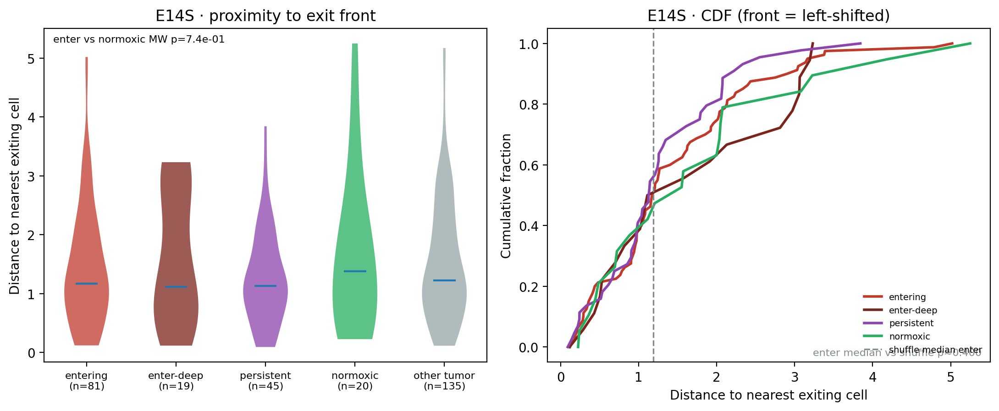
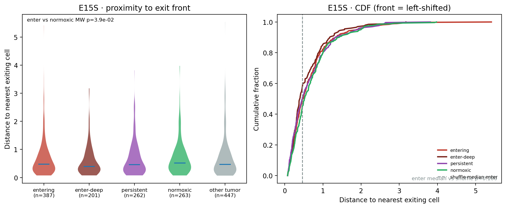

Velocity-defined entering and exiting tumor cells are spatial neighbors — a contiguous continuum, strongest between entering-deep and exiting states.
Hero summary
Neighbor enrichment: enter-deep → exit is 2.85× in E14S and 1.17× in E15S (both perm p≈0.002).
Normoxic → exit is not enriched. The continuum is ordered: exit ↔ persistent ↔ enter ↔ enter-deep.
Board: adjacency enrichments, kNN contact rates, and deep↔exit bridge maps for both faces of the experiment.
Bridge maps
Yellow lines connect entering cells to nearby exiting neighbors. Persistent cells (purple) sit along the same continuum.
E14S — immune-hot face; sparse tumor but dramatic deep↔exit adjacency.E15S — tumor/stroma core; same front geometry at tissue scale.
Zoomed fronts
E14S hotspots where enter and exit physically abut.E15S hotspots with enter / enter-deep / exit / persistent intermixed along fronts.
Front ribbons
Local neighborhood mixtures: high enter×exit co-presence marks front ribbons; polarity shows exit-dominated vs enter-dominated sides.
E14S local front score, polarity, and persistent density.E15S local front score, polarity, and persistent density.
Quantification
Permutation-tested neighbor enrichment for key dynamics pairs (★ p<0.05).Fraction of enter-deep cells with an exiting cell in their 30-NN, vs label-shuffle nulls, plus bridge maps.

E14S conceptual contrast: islands vs front, with contact statistic.

E15S conceptual contrast: islands vs front, with contact statistic.

E14S distance-to-exit distributions by dynamics state.

E15S distance-to-exit distributions by dynamics state.